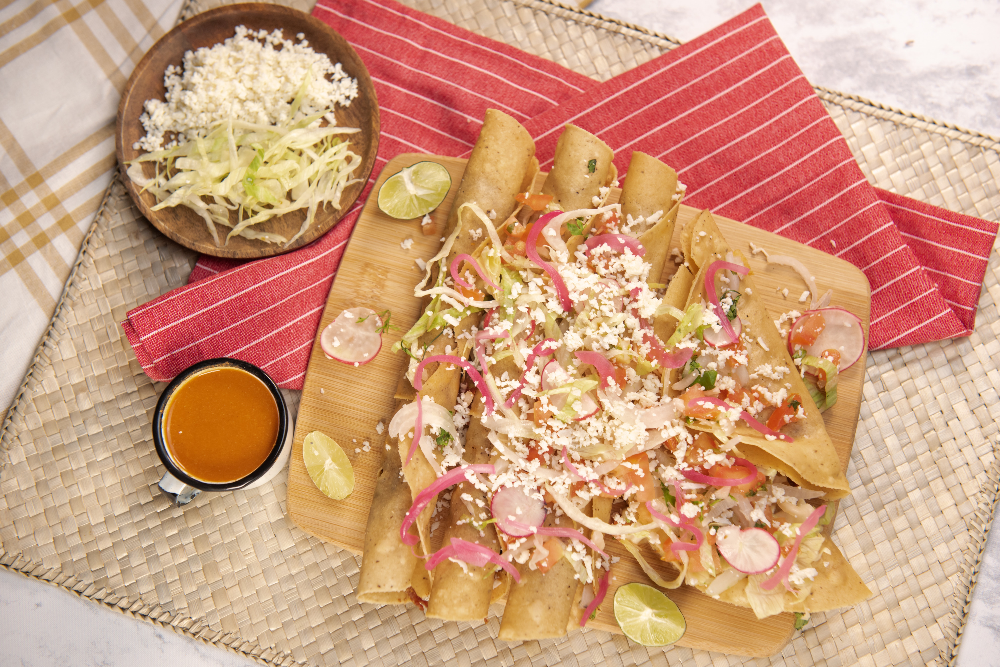

Cut steak into small pieces: Cut steak into strips that are 1/2-inch thick, then cut into pieces that 3/4-inch in size. Mix marinade ingredients: In a large mixing bowl whisk together lime juice, olive oil, honey, garlic, ancho chili powder, cumin, salt and pepper. Toss steak and marinade, rest: Add steak pieces to lime mixture then toss well to coat. Cover and refrigerate 1 hour and up to 6 hours. Heat 2 tsp vegetable oil in a cast iron skillet over medium-high heat. Quickly sear half of the steak at a time: Once oil is just smoking, use tongs to remove half the steak from the bowl (shake off some excess marinade) and transfer to pan and immediately spread steak pieces out into an even single layer in pan (stand back it can splatter). Let cook about 45 seconds until nicely browned on bottom, then quickly flip each piece and cook to desired doneness, about 45 seconds longer (for food safety USDA recommends internal safe temperature of 145 degrees on an instant read thermometer, I like to go to about 135 degrees). Transfer steak to a plate. Wipe skillet clean using tongs and a ball of paper towels. Return to heat and add remaining 2 tsp oil and let heat. Repeat cooking and transferring process with remaining steak. Serve right away in warmed tortillas with avocado, onion and cilantro.

Slice three ripe avocados in half, remove the pit and scoop them into a mixing bowl. Then use a fork to gently mash them to your desired level of chunky or smooth. Add the onions, tomatoes, cilantro, jalapeno pepper, garlic, lime juice and salt and stir everything together. That’s it. The most delicious, easy guacamole.

Follow these easy directions to create those instagrammable tacos that have everyone drooling. Chop the meat: remove the meat from the broth and finely chop. Use the leftover grease: save the grease that comes to the top of the stew from cooking. Save it all and add the grease to a small/medium size skillet. Fry Tortillas: dip the corn tortillas into the grease, then place the tortilla on a large skillet or comal. Fry the tortillas in the grease over medium heat. Top the tortilla with chopped birria beef and shredded cheese. Fold the taco over while it’s frying, pressing down with the spatula to help flatten the taco. Fry both sides until the taco is crisp.

Think back to when you've bought a burrito at a restaurant, and imagine folding that tortilla around those fillings, like at Chipotle. To make gluten free burrito wraps, you need a larger tortilla. Try to make a burrito with a 6-inch or even an 8-inch tortilla. You'll see that you can barely place anything inside the wrap and still fold the burrito closed. The best way to make a burrito wrap is to begin with a 10-inch tortilla. Place it, open, in front of you on a flat surface. For a 10-inch tortilla, you should be able to add a generous 1⁄3-cup of your filling across the center of the round. Pile the filling high, rather than spreading it out flat to make it easier to wrap, and leave a 1-inch border clean on both sides of the filling. Then, fold the sides of the tortilla in toward the filling, using that 1-inch clean border without filling and press down. Fold the bottom part over the filling, too, and roll away from you until the filling is completely enclosed. To keep the burrito closed, a little shredded cheese can act as an adhesive. Just microwave your burrito, seam-side down, or heat in a hot skillet until the cheese begins to melt.
Cook the Meat. You can cook the meat in a slow cooker or instant pot. I like beef taquitos best, but you could also fill them with shredded chicken, or pork, instead of beef. For Slow Cooker taquitos: Season the roast with salt and pepper. Add chili powder, garlic, cumin, minced onion, beef broth and salsa. Cook on LOW for 7-8 hours or until meat is tender and shreds easily.Shred the meat. Remove the meat to a plate and shred with forks. Discard any large pieces of fat. Return to the pot to keep warm. Warm the tortillas: Heat a non-stick griddle over medium high heat. Cook tortillas for about 15 – 30 seconds on each side until soft and pliable. Remove tortillas to a plate covered with tinfoil to keep them warm and pliable. Fill tortillas with meat. Spoon about 2 tablespoons of the meat mixture into a line at one end of a tortilla and tightly roll it up. Use half of a toothpick to secure it. Fry or Bake Taquitos: For Fried Taquitos: Add about 1 ½ inches of oil to a skillet and heat to medium-high. Once the oil is hot (the tortillas should sizzle immediately when you put them in), fry the rolled tacos in small batches, for a few seconds on each side, rotating them as they cook, until they are golden and crispy on all sides. Place them on a paper towel lined plate.

Heat broiler: Move oven rack about 4-inch below broiler element. Preheat broiler to high heat. Roast tomatillos and jalapeño: Place tomatillos and jalapeño on a baking sheet then place in oven and roast about 4 – 5 minutes until charred on top (keep a close on on things as they can char pretty quickly – especially the pepper) Turn and continue to roast: Rotate veggies to opposite side and roast until charred on opposite side, about 3 – 5 minutes longer. Add ingredients to food processor: Slice pepper (or halve then remove seeds) then add to a food processor along with onion, cilantro, garlic, salt, sugar, lime juice, water and tomatillos (and any juices on pan). Blitz to a coarse texture: Pulse several times to a coarse puree. Stir in more water to thin if desired. Serve warm as a topping or chill through in refrigerator to use as a chip dip.